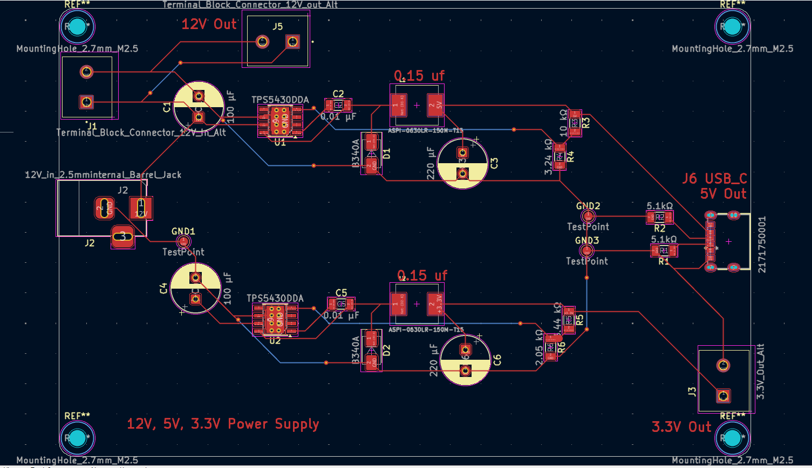

Project Webserver
Open Live WebserverOur Team
Abstract
SmartPost is a scalable and modular IoT-enabled secure package receiver designed as a plug-and-play consumer product for modern parcel delivery. The purpose of this project was to explore the development of a secure, remotely accessible package reception system with commercial potential. The system integrates three cameras for visual monitoring, a strain gauge for package weight detection, a linear actuator for door movement, and a solenoid lock for controlled access. A Raspberry Pi 4 serves as the primary embedded controller, while a second Raspberry Pi 4 hosts the server and enables remote communication over a wide area network through tunneling. To improve redundancy and system reliability, a Raspberry Pi Pico 2 is incorporated to support critical functions independently of the main controller. The software architecture includes both front-end and back-end development for remote monitoring and control, with support for multiple users and multiple devices to reflect a scalable consumer deployment model. The project also required custom 3D mechanical design for the enclosure and locking mechanisms, as well as PCB design for subsystem integration, packaging, and power distribution. A dedicated power supply PCB with buck converters was designed to operate the full system from a single transformer. Component testing and subsystem integration are being completed to validate functionality and demonstrate the feasibility of SmartPost as a user-friendly, scalable, and commercially relevant smart package delivery solution.
Methods
SmartPost was developed using a modular systems engineering approach that integrated mechanical design, embedded control, sensing, networking, and web application development. The prototype enclosure was designed to function as a secure package receiver and incorporated a locking mechanism, package detection hardware, and multiple cameras for visual monitoring. A Raspberry Pi 4 served as the main processing unit, coordinating sensor inputs, camera operation, actuator control, and communication with the remote user interface.
The software system was structured as a set of interconnected modules to separate core functions such as authentication, device communication, media handling, and user interaction. A web-based dashboard was developed to provide remote access to system status and controls. This architecture supported staged development, allowing each subsystem to be implemented and tested independently before full system integration. Mechanical and electrical subsystems were also designed with modularity in mind to simplify assembly, troubleshooting, and future upgrades.
Testing was performed in two stages: component-level verification and integrated system evaluation. Sensors, cameras, and access-control hardware were first tested individually to confirm expected behavior. After subsystem verification, the full prototype was assembled and tested under representative operating conditions to evaluate responsiveness, reliability, and usability. This method allowed the team to validate both the technical feasibility of the design and its potential as a scalable consumer product.
Ethics of Surveillance Case Study
This paper explores the ethical implications of surveillance in secure package-receiver systems, including privacy, consent, and responsible design.
Results
Initial development and integration of the SmartPost prototype demonstrated that the core system architecture is functional and capable of supporting secure, remotely accessible package reception. Key subsystems, including sensing, camera monitoring, embedded control, and web-based interaction, were successfully brought together into a working prototype. These results support the feasibility of the overall design and show that the project can operate as an integrated system rather than only as isolated components.
At the current stage of development, formal performance validation is still in progress. The team has established a structured set of hardware and software tests to evaluate reliability, responsiveness, and system behavior under representative conditions. An engineering test spreadsheet is being used to organize and track planned validation activities, while software tests defined within the project GitHub repository provide a foundation for verifying important parts of the codebase and supporting maintainability.
Although testing is not yet fully complete, the results obtained so far indicate that the SmartPost concept is technically viable and that the system architecture is suitable for further refinement. Ongoing testing will be used to better quantify system performance, confirm reliability, and identify areas for improvement as the project moves toward a more polished and fully validated prototype.
Conclusion and Future Research
The SmartPost capstone project demonstrated the feasibility of a secure, remotely accessible package receiver designed for modern parcel delivery. By integrating sensing, camera monitoring, mechanical access control, embedded processing, and a web-based interface, the project brought together multiple engineering disciplines into a single functional prototype. The system showed that secure package reception can be made more convenient, observable, and scalable through a modular design approach.
In addition to validating the overall technical concept, the project established a strong foundation for future development as a more robust and product-ready system. As part of this effort, the team developed multiple custom printed circuit boards to improve wiring organization, reduce system complexity, and increase overall reliability. These PCB designs help move the prototype away from temporary wiring and toward a cleaner, more maintainable, and more durable implementation.

A dedicated buck converter power supply was also developed so that 5 V and 3.3 V electronics could be powered efficiently from the system's 12 V supply. This improves power integration across the prototype and supports the reliable operation of embedded controllers, sensors, and supporting electronics. Together, these electrical design improvements strengthen the practicality of the system and support future refinement into a more polished engineering product.
Future research and development could focus on improving long-term reliability, strengthening security, and expanding usability. Potential next steps include refining the enclosure and locking hardware, improving environmental durability for outdoor deployment, adding support for multiple users and delivery workflows, developing a dedicated mobile application, and enhancing automation through smarter event detection and notification systems. Additional work could also explore product miniaturization, manufacturing optimization, and broader integration with connected home ecosystems. These improvements would help move SmartPost closer to becoming a practical and commercially scalable smart delivery solution.